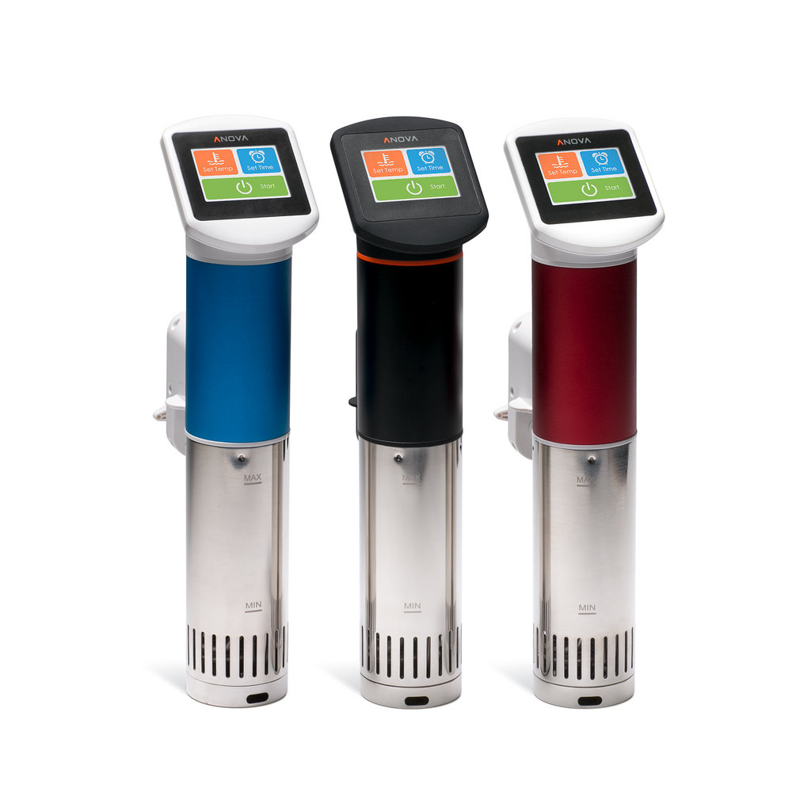
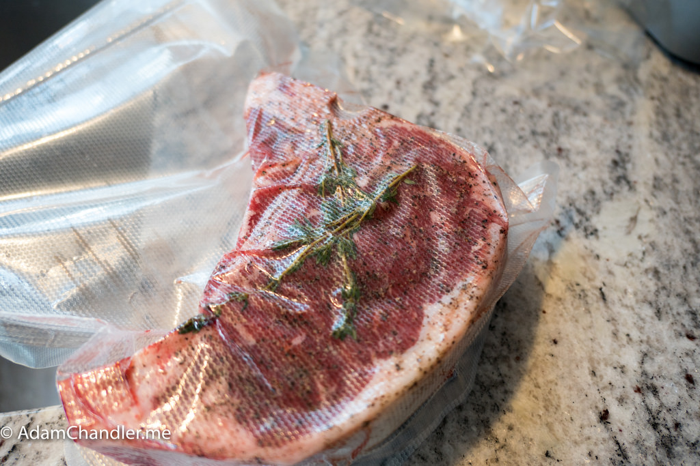
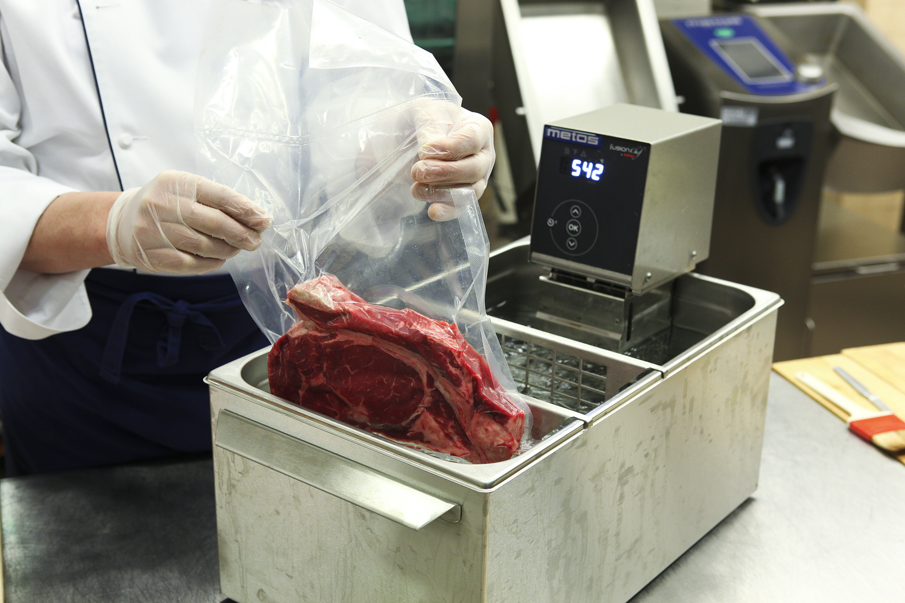
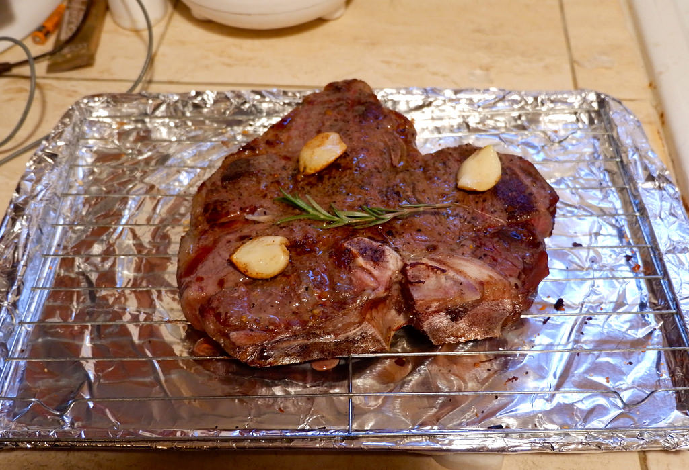
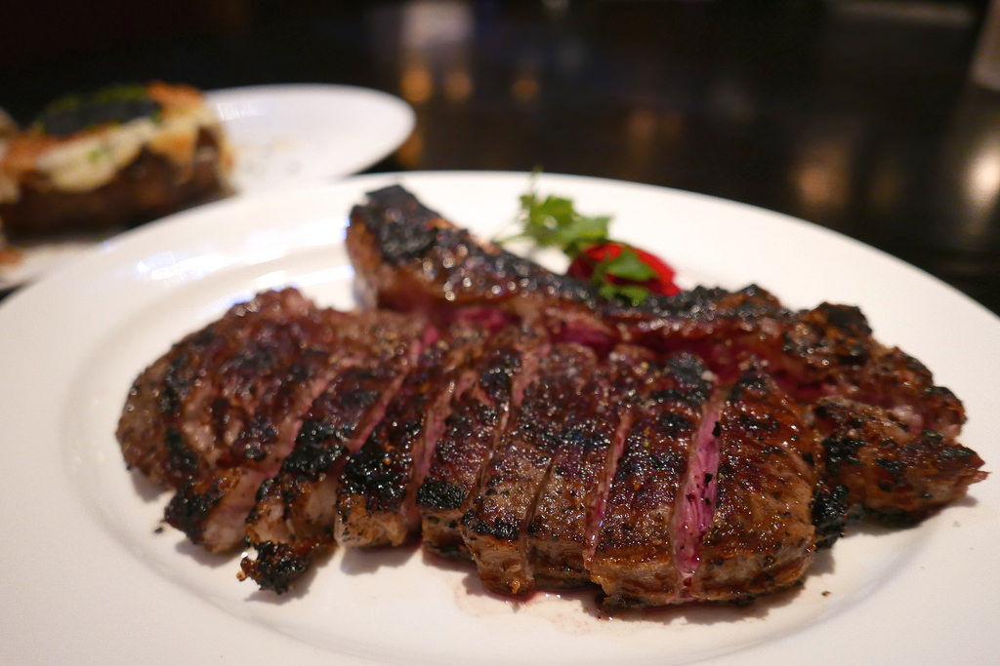

Step 1: Purchase an immersion ciculator and place it in a container of water.

Step 2: Vacuum seal your food of choice and set circulator's temperature to manufacturer's instructions

Step 3: Place vacuum sealed bag into the water bath and cook for recommended time

Step 4: Remove food from bath and from bag. Pat dry and sear on grill, pan, or in oven.

Step 5: Serve and enjoy!
